Chap4 Recurrent Neural Networks¶
4.1 基本结构¶
CNN从本质上是模拟了人的视觉，RNN相比CNN来讲多了“记忆”功能
memory的加入使得神经网络可以处理时序问题，例如天气预测、股票涨跌、而文字中的上下文也是同理的。
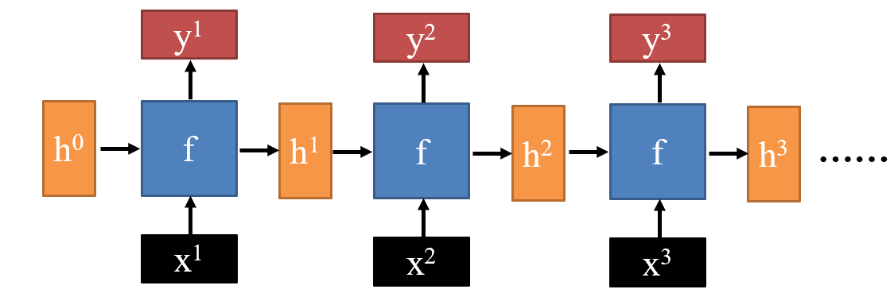
\(h^n\)是一个“记忆”向量，\(h^0\)最开始是随机初始化的，每次处理完之后改变再输入\(f\)里面。
比如执行语句分词任务：
1 | |
这些词对应的B或者I就是下一个\(f\)的\(h\)。
4.2 RNN变种¶
Deep RNN
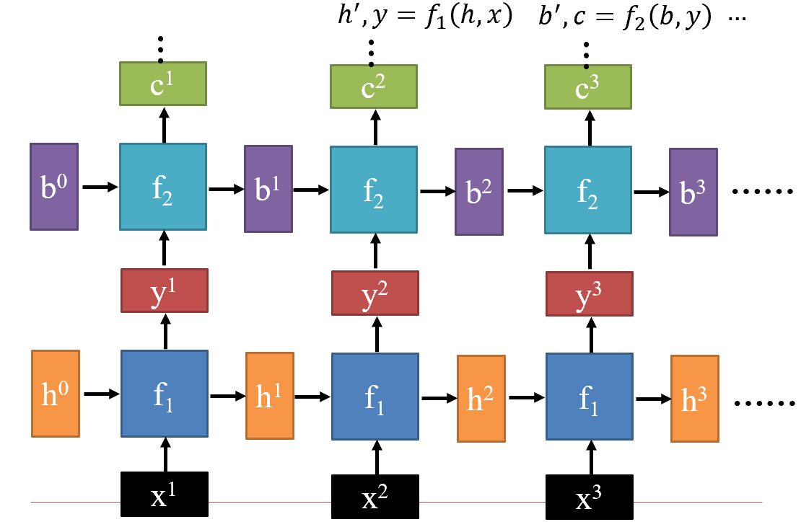
Bidirectional RNN
使用前向后向RNN分别获取双向（上下文）信息再合并
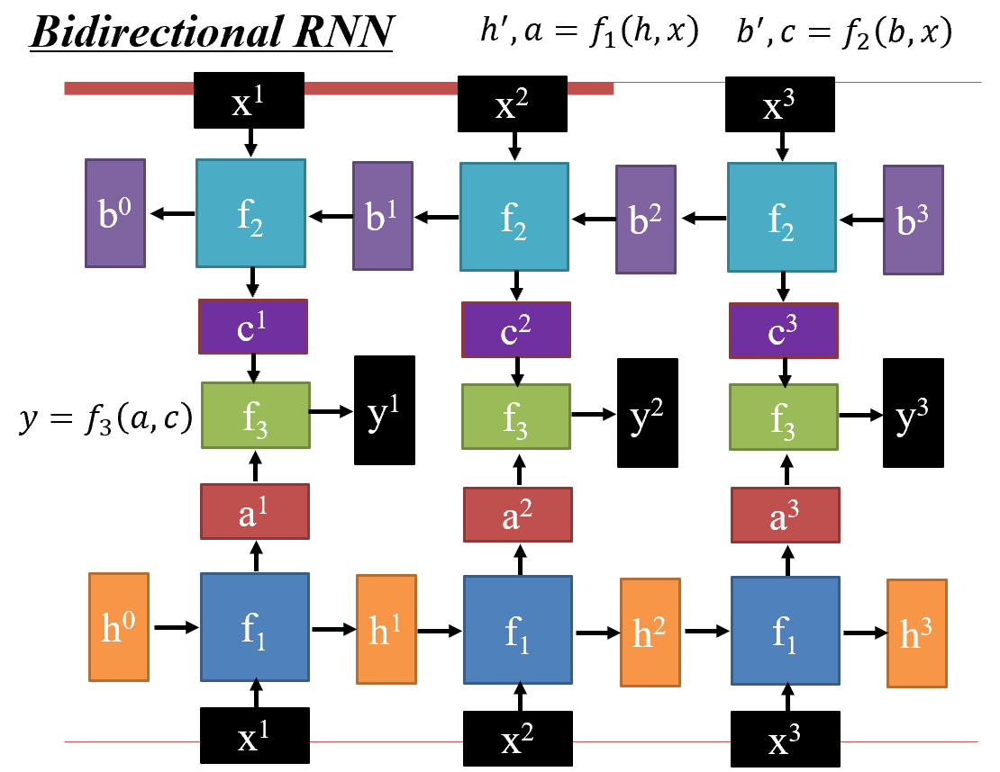
4.3 工作原理¶
4.3.1 最简单的Naive RNN：¶
先处理输入，使用\(W^h\)和\(W^i\)变到同一维度再相加 - 其实也等价于一个\(h + x\to h\)的全连接神经网络
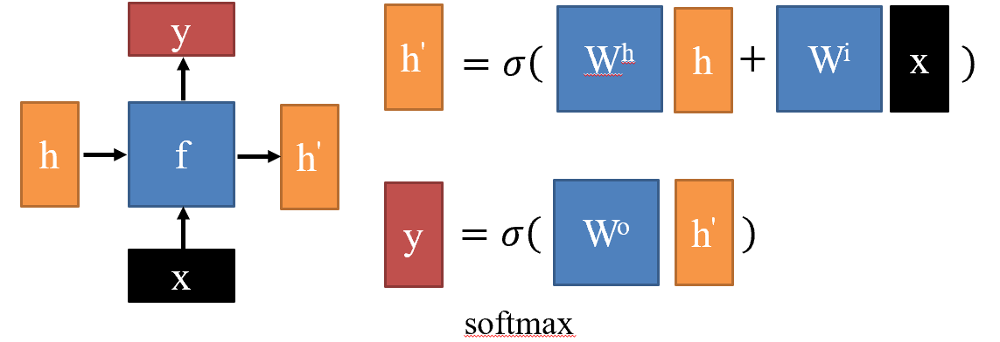
问题：
- \(h\)的变化太剧烈，新组合的记忆和原来的记忆差别大，“思维跳跃”，记不住内容也不稳定。
4.3.2 解决方式：LSTM - 长短时记忆¶
把输入记忆分成：\(c\) - 长期记忆，改变小，通过加法改变；\(h\) - 短期记忆，改变快
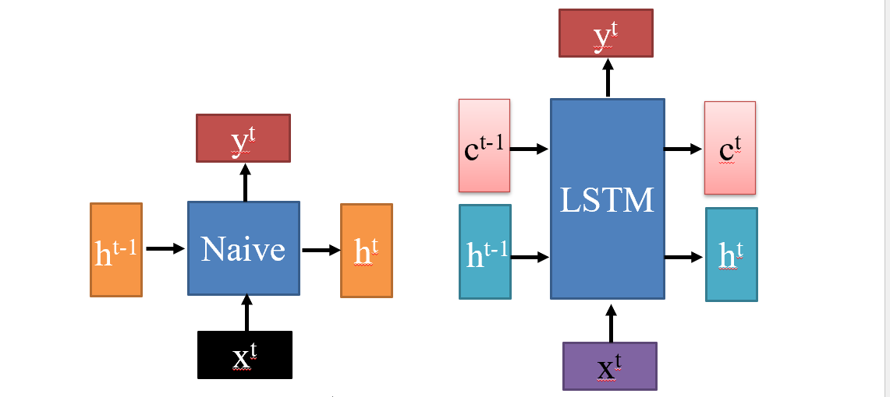
实现方式：
- 根据输入决定哪些写入长期记忆、哪些从长期记忆去掉，哪些写入短期记忆；拼接投影调整维度之后激活，每个维度都是
0或者1，表示这个阀门是否开放 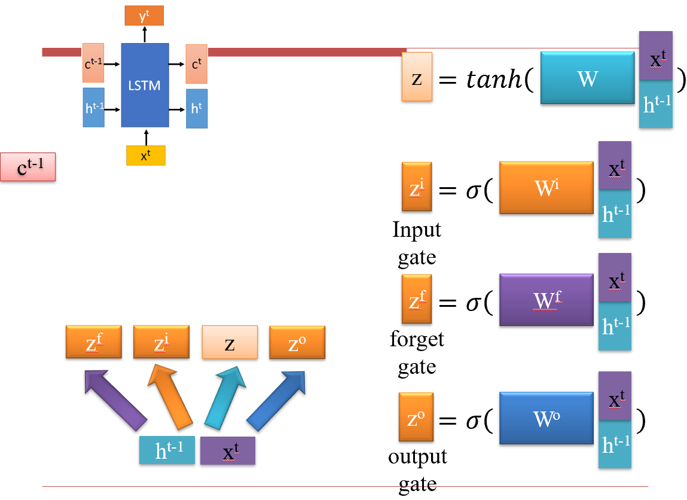 - peephole：仅仅缩放长期记忆，并且把长期记忆拼接入输入 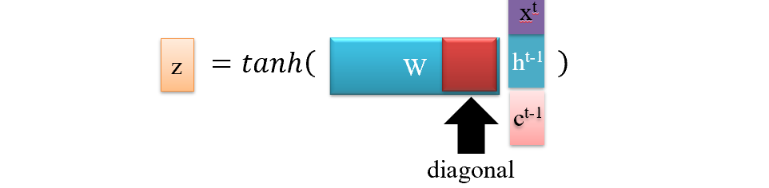
- 这个圈圈表示逐位相乘但不相加。 \(z^i\)控制哪些数据要向前传，\(z^f\)控制哪些记忆需要忘记一些，两者相加构成新的长期记忆； \(z^o\)和长期记忆组合就是短期记忆，也是输出； 根据这些规则不断传递、更新记忆。 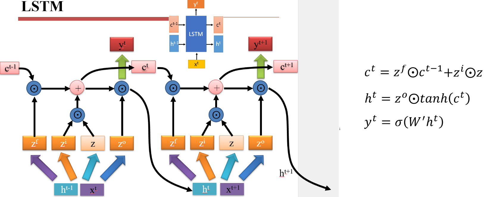
为了探究LSTM中哪部分最重要，谷歌做了一个消融实验。 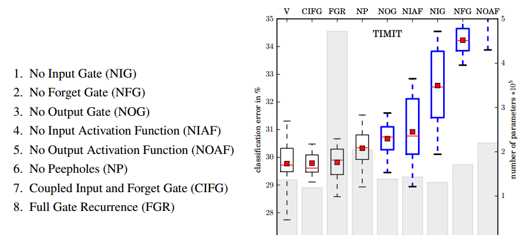
探究结果：
1. 标准 LSTM 运作良好
2. 简单 LSTM：耦合输入和忘记门，去除窥视孔
3. 忘记门对性能至关重要
4. 输出门激活功能至关重要
问题：
1. 串行的，计算慢且不好gpu加速
2. 梯度消失/爆炸问题：LSTM在做计算的时候会被展开成一个非常深（导致梯度消失）且中间参数都一样的神经网络，而且不好做跳跃会导致信息丢失；最后我们输出可以表示为\(y = W^{LT}X\)，\(L\)表示层数，这样的结构容易导致跳变巨大的损失函数，是对反向传播优化过程非常不友好的解空间，并且特别大的梯度相乘会在程序上带来NA错误，导致网络崩溃
- 最简单的解决方式：weight clear，梯度截断，#define MAXN 9999..，一旦出现NA将其替换成MAXN
- 其他方法：回滚，重新训练
变种：
不同的连接方式
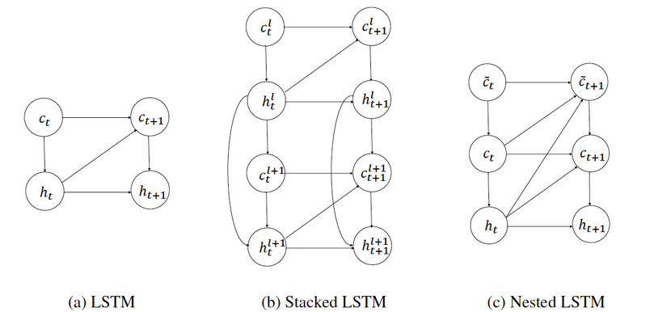
4.3.3 GRU¶
只有一个记忆，把input gate和forget gate合成一个reset gate： 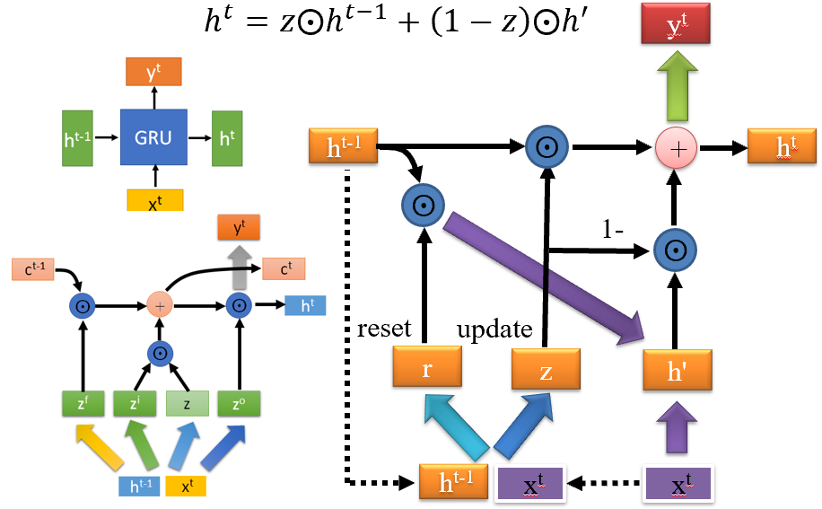 工业界效能更好。
4.4 RNN for NLP¶
相比CNN，RNN擅长捕获远距离依赖关系。
- 编码器 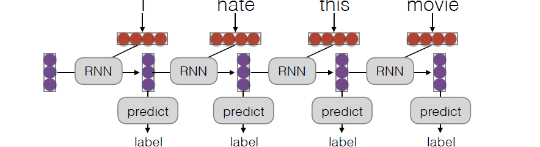 训练：手动设置训练集label，出错之后反向传播，调整路径上面的RNN的参数 最后也输出的代表整个句子的词向量用于后续的分类任务。
- 解码器：用于生成任务，例如next token prediction
我们将编码器和解码器连起来，就构成了sequence to sequence的架构： 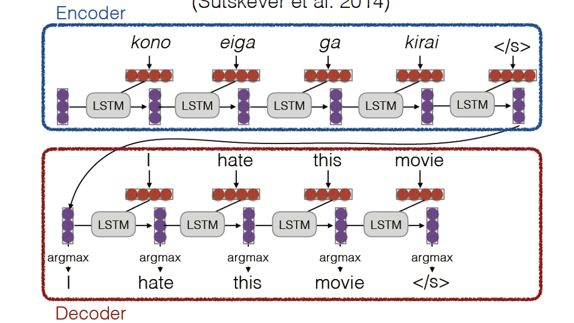 上述就是一个翻译任务的流程，句子读取完毕之后就实现了这个句子在语义空间的编码，之后的decoder根据语言词典和句子在语义空间的编码（memory）完成逐个单词的翻译，同时记忆也随着之前被输出的单词而更新。